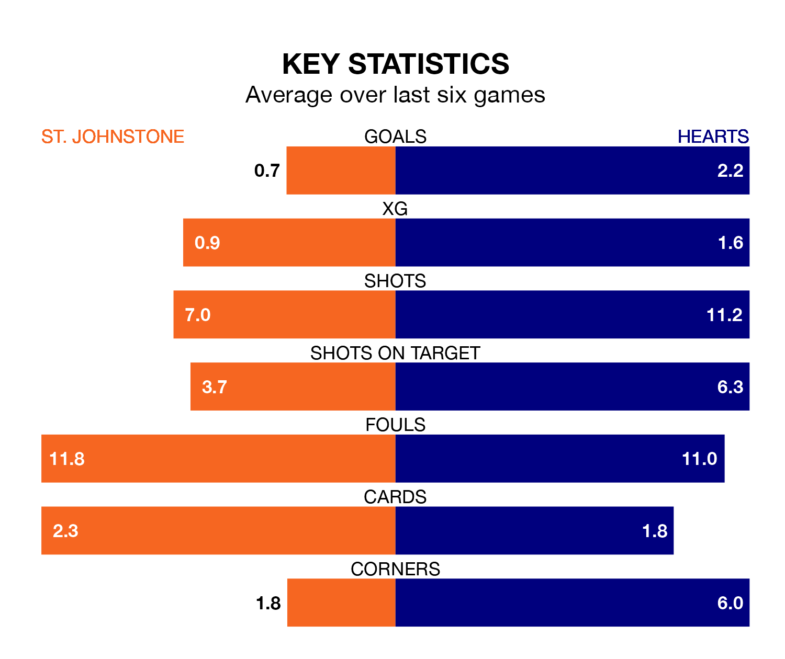

St. Johnstone host Hearts in Wednesday's late match at McDiarmid Park looking to bounce back from defeat last time out in the Premiership.
The Saints, who sit ninth in the league after 23 games, fell to a 0-1 away defeat to Ross County on Saturday.
They face a Hearts side who picked up a win in their last match, a 3-2 victory against Dundee, and who sit third in the table.
With 16 goals in 23 games so far this season, St. Johnstone are the league's second-lowest scorers with 0.7 goals per game. And they are conceding at an average rate, letting in 29 goals at a rate of 1.3 per game.
Hearts, meanwhile, are average scorers, with 1.3 goals per game. They have conceded 0.9 goals per game.
In Lawrence Shankland, the visitors have the league's sharpest shooter so far this season. He has notched 16 goals in 24 appearances.
His goal rate of one every 135 minutes is slightly quicker than that of Nicholas Clark, the Saints' top scorer with a goal every 109 minutes, and a total of four goals in eight games.
The home side are in disappointing form in the Premiership, with one win and three draws from their last six games.
With five wins and a draw over that period, Hearts's form is much better – they have taken 16 points from 18, compared to St. Johnstone's six.
In the last 10 years, St. Johnstone and Hearts have played each other on 26 occasions. St. Johnstone won eight of them, Hearts 11, and they drew seven times.
On average, the Saints scored 1.2 goals and Hearts 1.4 in those matches.
Their last meeting was on November 25, when Hearts won 1-0 at home.
Wednesday's match will be refereed by Iain Snedden, who has taken charge of one Premiership game so far this season, issuing one red card and booking five players. He has not awarded any penalties.
He is yet to oversee a match featuring either St. Johnstone or Hearts this season.
Updated: 10:28 (UTC), 06/02/24